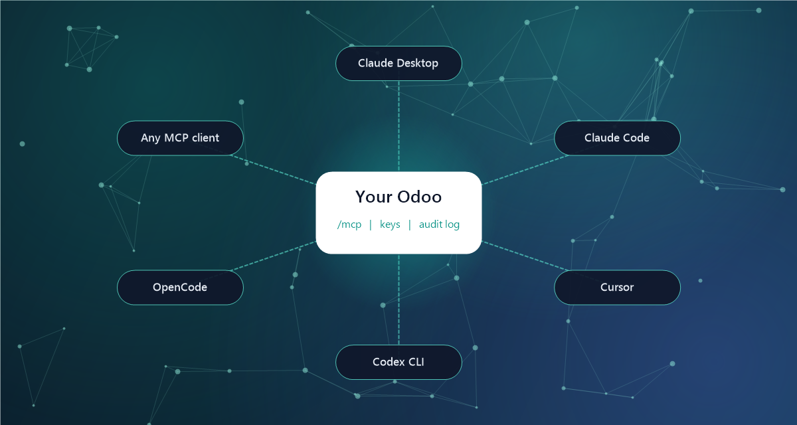

Chat everywhere
Open the chat from the systray, in a floating window next to the record you are on, or full screen. Answers stream in live, every tool call is shown step by step, and the agent can see which list, form or report you are looking at.

Model Context Protocol
Odoo becomes an MCP server at /mcp. The Connect AI wizard gives you a
ready-to-paste configuration for Claude Desktop, Claude Code, Cursor, Codex CLI and OpenCode,
and works with any other MCP client.
One module, no extra services to host.
Give each agent its own instructions, model and tool set. A router agent can hand a question over to the right specialist.
Save proven instructions as skills. Users pick them with /, and agents load them on their own when a task calls for one.
@mention an agent on any record or in Discuss and it answers in the thread, knowing the record it was asked about.
Draft, rewrite or shorten a message right in the composer, then accept, adjust or discard the suggestion.
Run an agent as a server action or an automation rule step, on the records that triggered it.
Let agents run daily or weekly reports, pause while they wait for something and pick up again later.
AI that works for your people, not around your rules.
Every tool runs as the user who asked, so record rules and groups apply as usual.
Deletes, workflow buttons and other risky writes wait for a click before they run.
Cap the spend, rounds and runtime of each turn, and see the cost of every chat.
Tool calls and approvals are logged, and old chats can be cleaned up automatically.
Install the module. It adds an AypaTech AI app to your menu.
Under Configuration > Providers, paste the API key of your AI provider.
Open the chat from the systray and ask your first question.
Optional: use Connect AI in Settings to plug in Claude, Cursor and others.
| Odoo version | 18.0, Community and Enterprise |
| AI providers | OpenAI, Anthropic, Google Gemini (bring your own API key) |
| Odoo dependencies | Discuss, Automation Rules and standard web modules |
| Python packages | croniter |
| MCP endpoint | Streamable HTTP at /mcp, bearer key authentication |
| Languages | English, German, Spanish, French, Italian |
| License | Odoo Proprietary License v1.0 (OPL-1) |
Only to the AI provider you configure, and only what a conversation needs. Everything else, including chats and logs, stays in your Odoo database.
No. Agents act with the rights of the user they work for, the same as if that user clicked through Odoo themselves.
You only need an API key from one of the supported providers. There is no additional server or service to run.
Yes. Agents, skills and spaces are configured from the interface, and developers can add their own tools. We also build custom agents on request.
Installation, configuration, training and custom development by the AypaTech team.